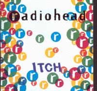
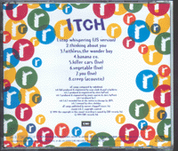
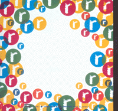
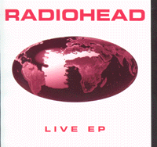
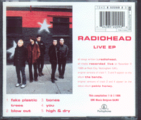
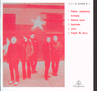

Catalog # : 12RDJ 6405
Reference # : ?
Released 02/??/95
Track Listing :
<1> Planet Telex
<2> Planet Telex (hexidecimal mix)
<3> Planet Telex (l.f.o. jd mix)
<4> Planet Telex (trashed mix)

|

|

|
Reference # : TOCP-8285
Released 06/01/94
Track Listing :
<1> Stop Whispering (US version)
<2> Thinking About You (drill version)
<3> Faithless, The Wonder Boy
<4> Banana co. (acoustic)
<5> Killer Cars (live, acoustic)
<6> Vegetable (live)
<7> You (live)
<8> Creep (acoustic)
Also available in :
New Zealand : Parlophone 7243 8 55097 2 8 (booklet contains no lyrics
or boigraphy)
Catalog # : SPCD 1831
Reference # : ?
Released ??/??/95
Track Listing :
<1> My Iron Lung (live)
<2> Just (live)
<3> Maquiladora (live)
Songs recorded live at the Astoria on 05/27/94.
Catalog # : SPCD 1903
Reference # : ?
Released ??/??/95
Track Listing :
<1> Just
<2> Bones (live)
<3> Planet Telex (live)
<4> Anyone Can Play Guitar (live)
Songs recorded live at the Forum on 03/24/95.

Catalog # : GOD CD135
Reference # : ?
Released 10/??/95
Track Listing :
<1> Lucky
<2> 50ft. Queenie (live) [PJ Harvey]
<3> Guru [Momentum]
<4> Untitled [Postishead]
Also available in :
Japanese release : Polydor POCD 1204
Cassette : GOD MC135

|

|

|
Reference # : 7243 8 52135 2 6
Released ??/??/??
Track Listing :
<1> Fake Plastic Trees (live)
<2> Blow Out (live)
<3> Bones (live)
<4> You (live)*
<5> High And Dry (live)
* The 4th song can be [Nice Dream], but I don't know the difference between the regular version and the one with the "mistake".